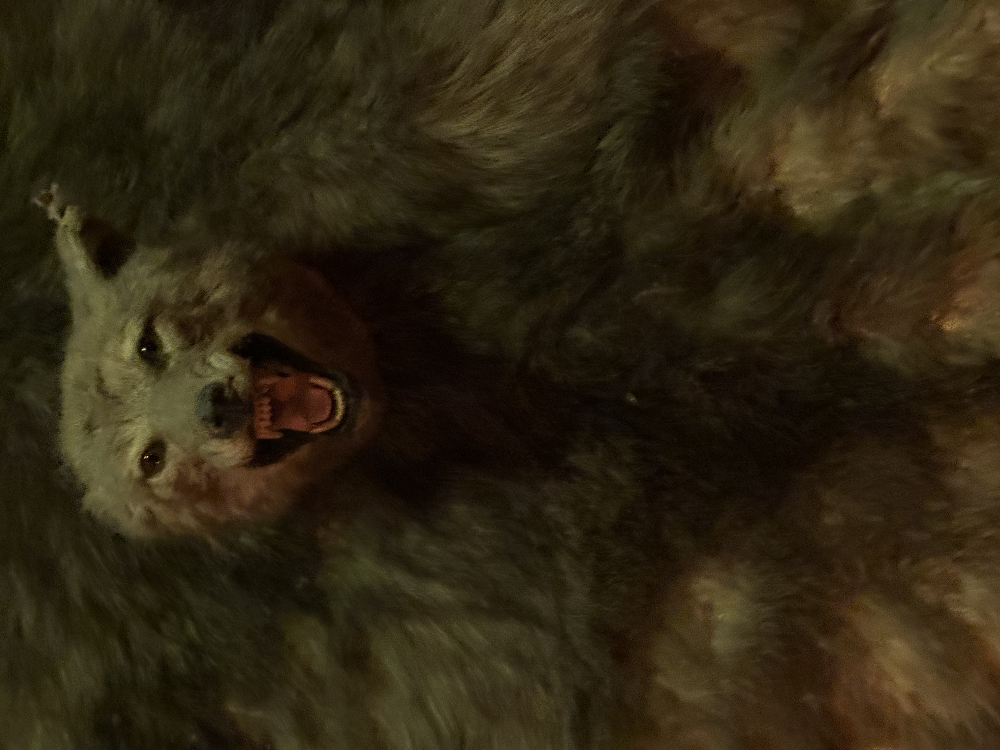
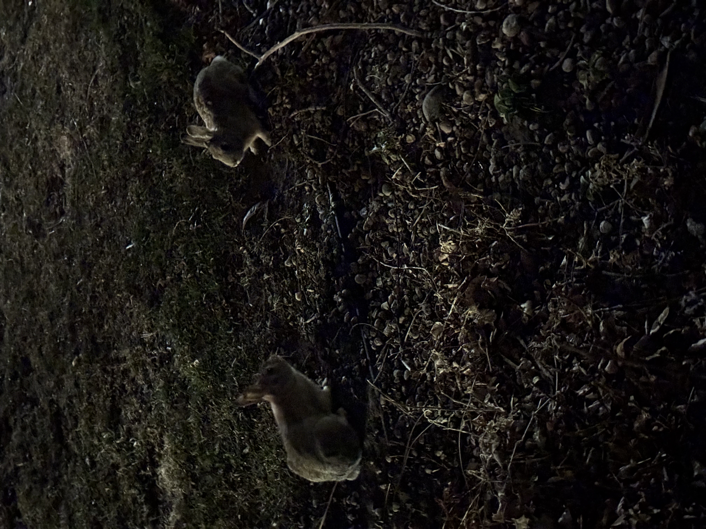
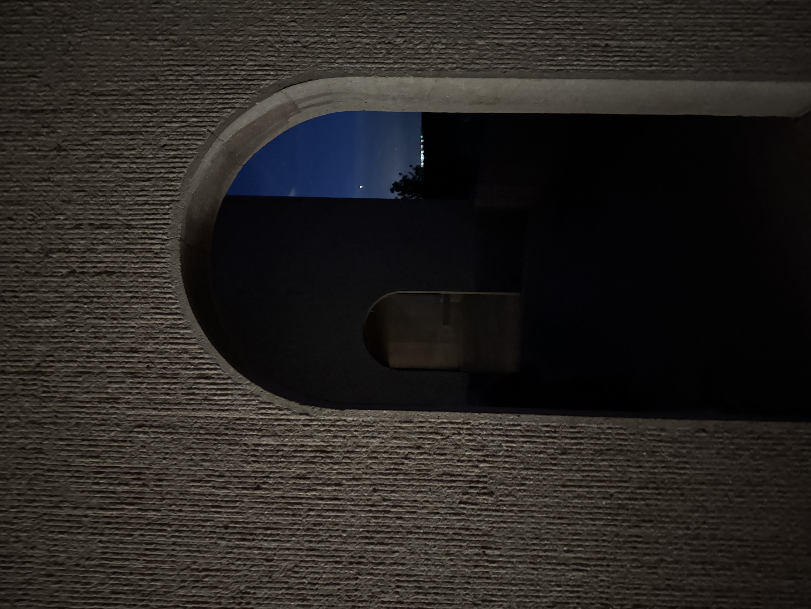
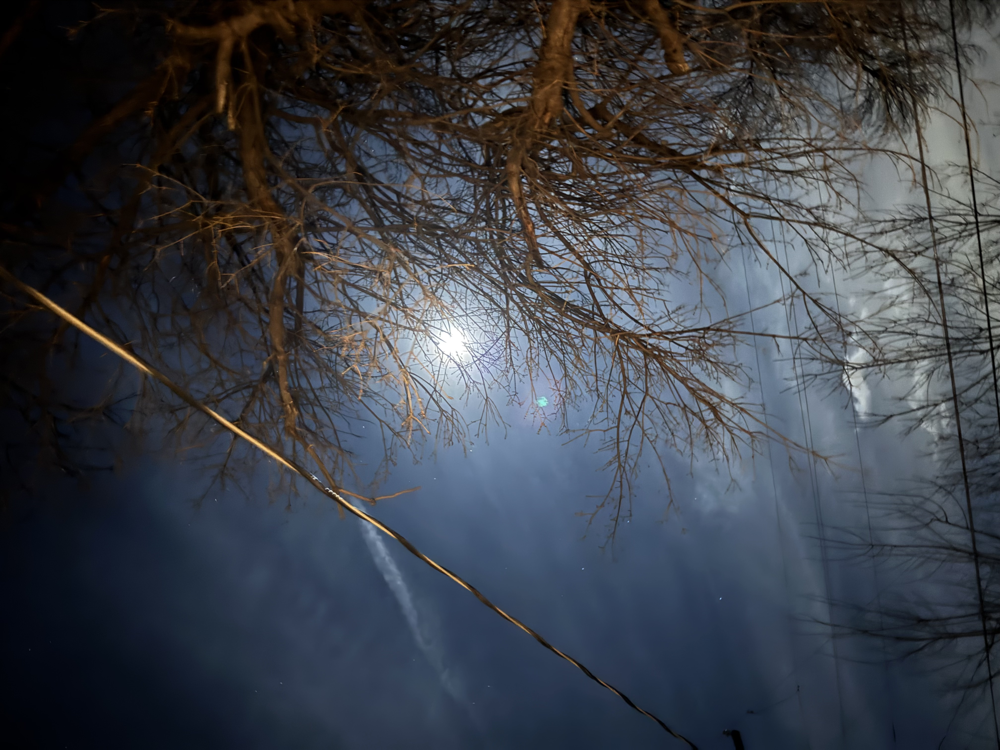

The Universe is as strange as it is completely commensurate




Perhaps what connects these images are not the subjects themselves but the human-minded perspective that placed them next to eachother. The Universe has many commonalities. Color and percieved aesthteics point to a certain subset of similarities for these four images.